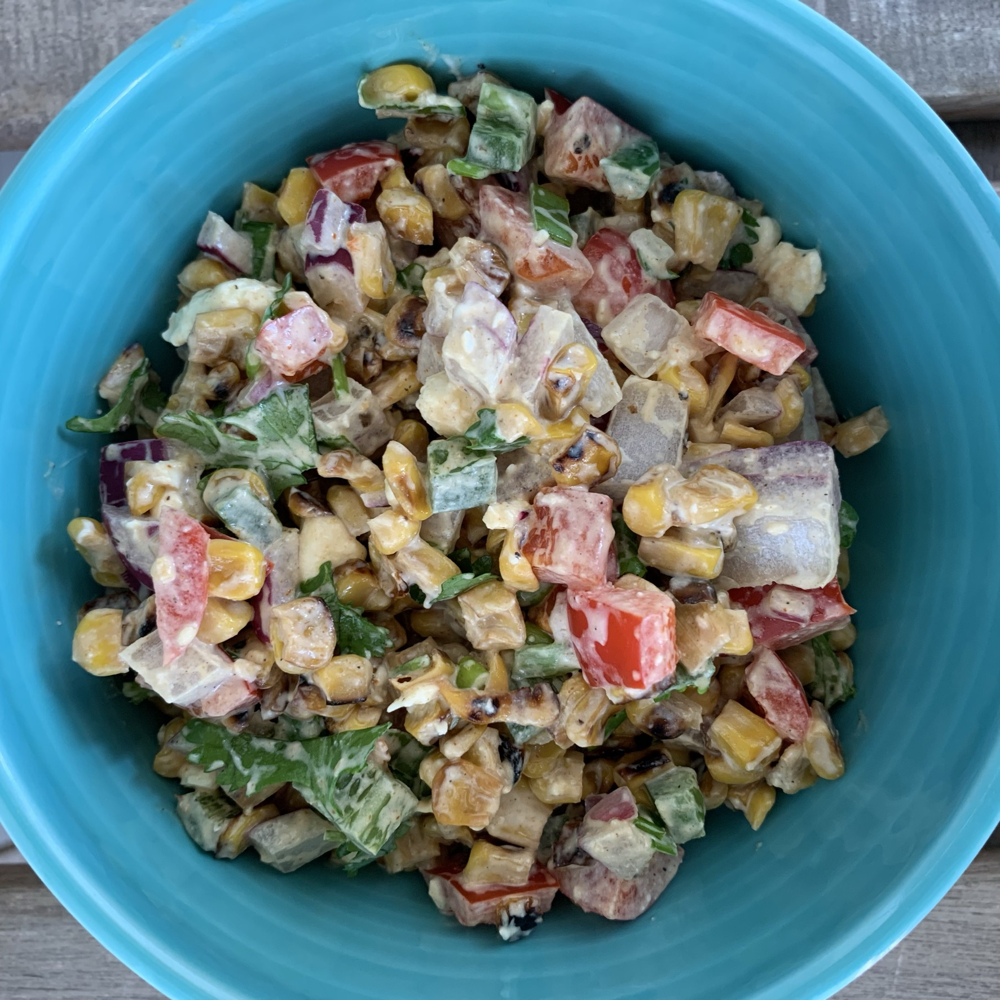
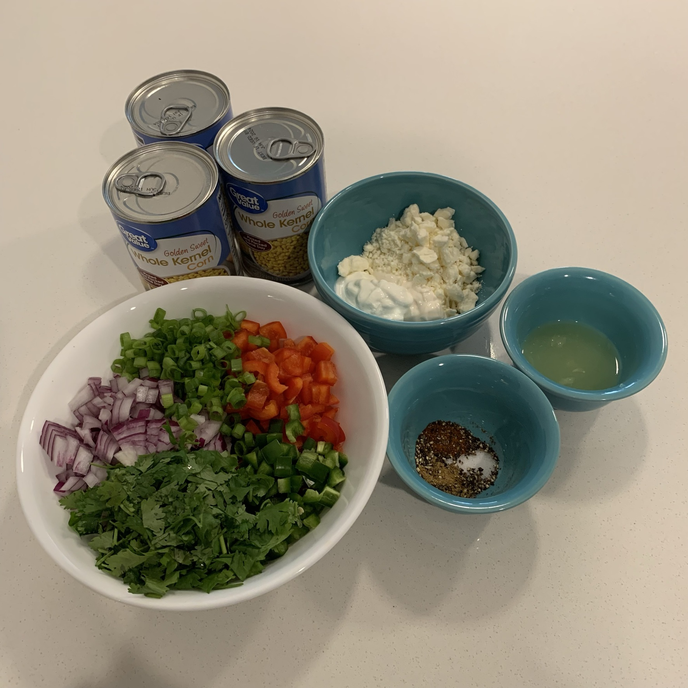
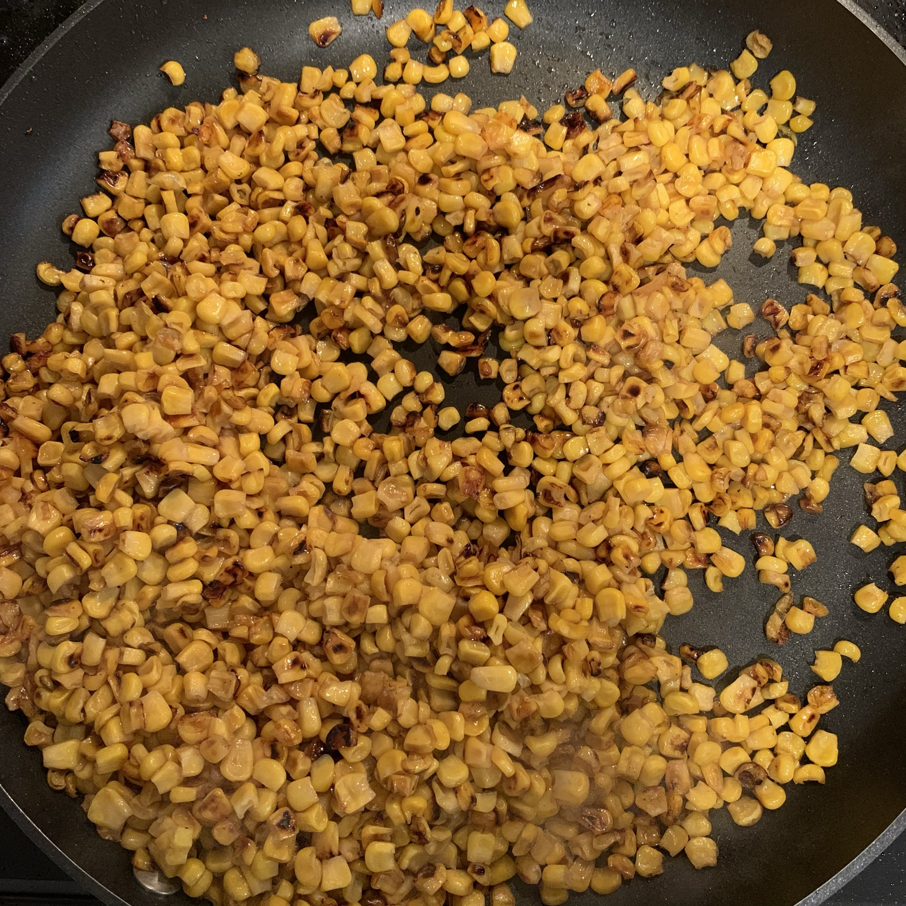

STREET CORN SALAD
 Street Corn Salad Ingredients
This is close to the level of char you're aiming for.
INGREDIENTS
- 1-2 Tbsp olive oil
- 3 (15 oz) cans of corn (could use the equivalent amount of fresh or frozen corn)
- 1 small red bell pepper, chopped
- 1/2 red onion, chopped
- 1/2 cup fresh cilantro, chopped
- 4 green onions, chopped
- 1-2 jalapeños, diced (adjust or omit depending on spice preference)
- Juice from 2 limes
- 1/2 tsp ground cumin
- 1/2 tsp smoked paprika
- 1/4 tsp ground black pepper
- 1/4 tsp salt
- 3 tbsp sour cream (or plain yogurt)
- 3 tbsp mayonnaise
- 1/2 cup crumbled feta cheese
DIRECTIONS
- Heat the olive oil in a large skillet over high heat. Add the corn and stir occasionally. Cook until corn has reached a good level of char (picture above).
- Transfer the charred corn to a large bowl and let cool for a few minutes.
- Add the remaining ingredients to the bowl and mix until combined.
- Adjust seasonings and lime juice to taste. I like to eat this corn salad with rice and beans.
Adapted from: Jo Cooks Mexican Street Corn Salad